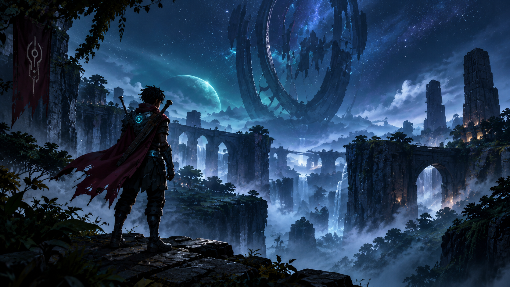
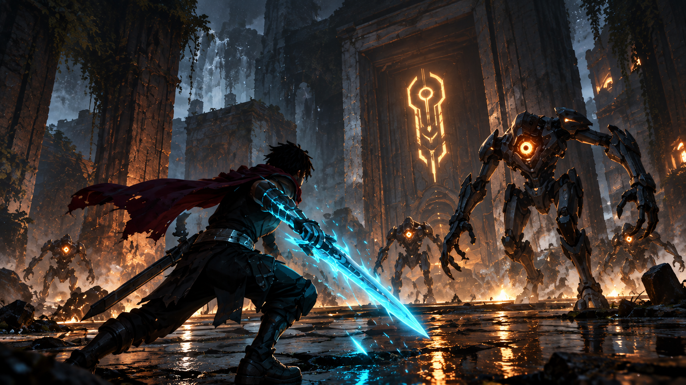
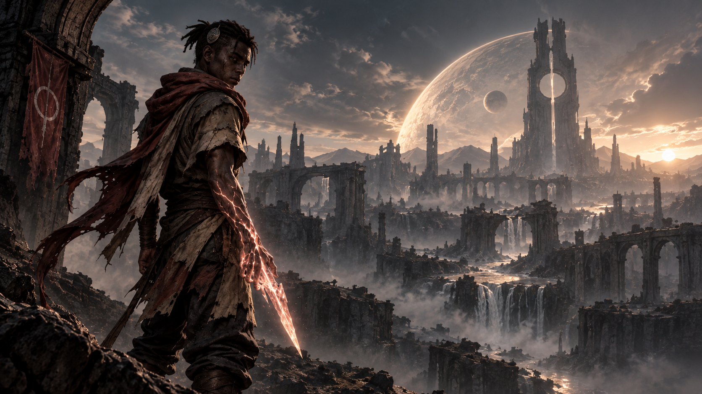

Shape
Alter Ascadium and change its properties to overcome obstacles and shape the world around you.
A 2D METROIDVANIA ACTION-ADVENTURE
The world you built. The tribe you erased. The survivor who is coming for both.
Zan'zol is the last survivor of a tribe capable of bending Ascadium—the living mineral powering an entire artificial planet. The Veiled Architects destroyed everything he loved to keep that power buried.
THE WORLD
Humanity forged a new world in the Osiris Galaxy, building an entire civilization around Ascadium—a rare mineral unlike anything known before.
But the people who built this world became its rulers. The Veiled Architects will do anything to keep their secrets buried.
GAMEPLAY
Ascadium isn't just a resource. It's the key to surviving a world built to destroy you.
Alter Ascadium and change its properties to overcome obstacles and shape the world around you.
Create weapons and shields directly from the living mineral and adapt to whatever hunts you.
Bend the environment to your will. Use Ascadium to interact with objects and uncover new paths.
Exploit the systems of the Veiled Architects and turn their technology against them.
MEDIA
Explore the landscapes of Osiris, uncover what the Veiled Architects left behind, and witness Zan'zol's journey through a world built to keep him out.



▶